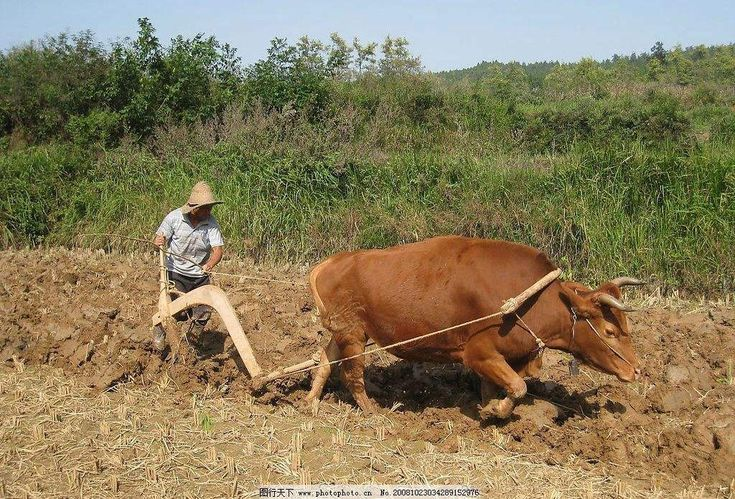
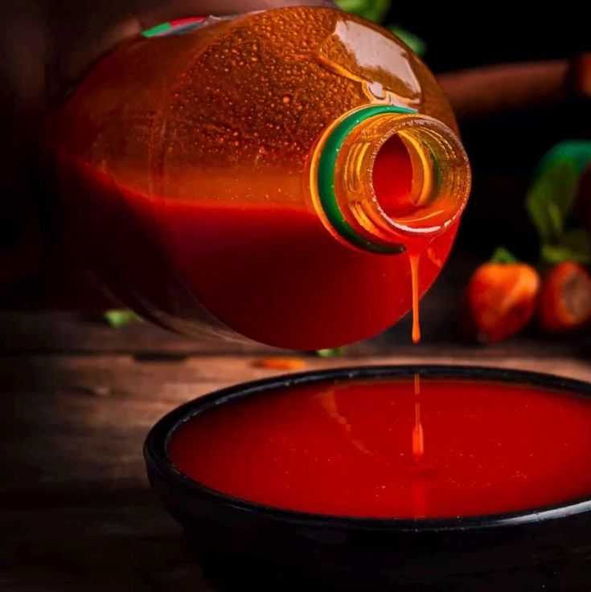

C.C.A.N Ferme Monseigneur
C.C.A.N Ferme Monseigneur
C.C.A.N Ferme Monseigneur
C.C.A.N Ferme Monseigneur
Agriculture durable, élevage de qualité et produits locaux au cœur de la RDC.

C.C.A.N Ferme Monseigneur cultive plusieurs hectares de terres riches à Mbujimayi. Notre mission : nourrir les familles, soutenir l'économie locale et promouvoir une agriculture durable et moderne.
En savoir plusDu champ à votre table, des produits frais et locaux.





Nous utilisons la traction animale par les bœufs, une pratique respectueuse et efficace qui allie savoir-faire ancestral et agriculture durable.
Voir nos projetsPassez votre commande directement via WhatsApp, rapidement et simplement.
💬 Commander via WhatsApp